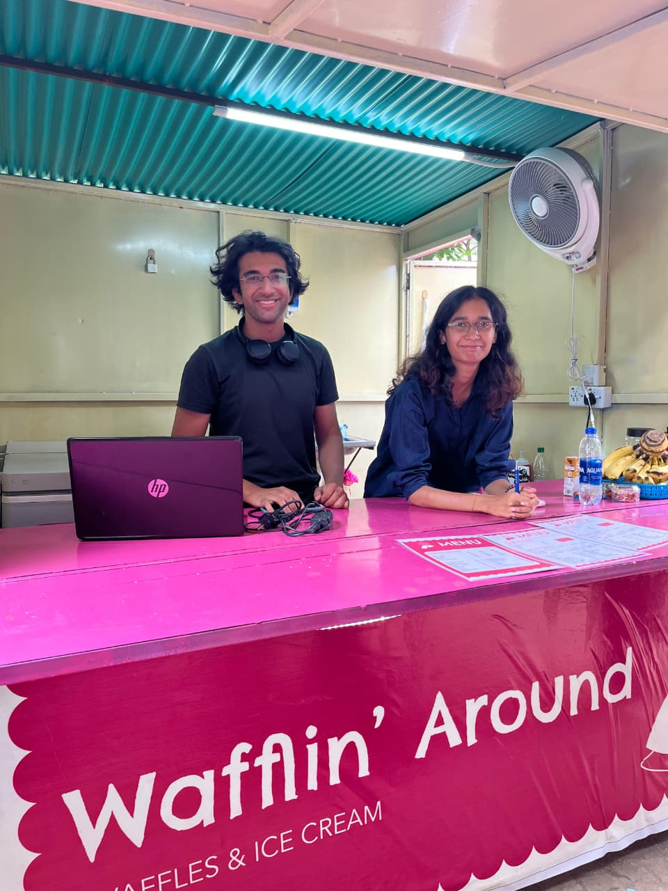

Experience
Data engineering, game instruction, NLP research, and Unity development.
Portfolio Playlist
Data engineering, game instruction, NLP research, and Unity development.
Industry FYP, Java painter, WebGL, NLP, games, apps, and systems.
Python, SQL, Java, C/C++, Power BI, Azure, Unity, Unreal, Godot.
Wafflin’ Around: operations, product, workflow, and real-world execution.
Recent posts, current work, research, and what I’m building next.
Recently Played Updates
Reworking this site into a Spotify-style portfolio with cleaner sections, stronger project focus, and more personality.
Reading around machine unlearning, reconstruction attacks, and leakage in forgotten-data workflows.
Working on banking analytics, ETL/reporting workflows, volatility, drawdowns, persistence modelling, PCA, and Excel outputs.
Discography
Biggest Hit
A banking analytics engine for deposit behaviour analysis, ETL/reporting workflows, statistical modelling, volatility analysis, drawdown metrics, persistence modelling, PCA, and Excel-based analytics outputs. The project is proprietary, so no GitHub link or internal visuals are shared publicly.
MS Paint-style clone built in Java from scratch, focused on manual drawing logic and core graphics behaviour.
GitHub ↗Computer graphics project with manually written WebGL code and no high-level graphics libraries.
GitHub ↗NLP-backed property search prototype that helps users search for real estate information using natural language.
GitHub ↗Puzzle game based on cryptography concepts, built around cipher-solving and cybersecurity-themed progression.
GitHub ↗Database-focused voting system web app built as a DBMS project with election and voter-management logic.
GitHub ↗Flutter/Firebase food-ordering app with cart, checkout, authentication, active orders, and role-based flows.
GitHub ↗Point-of-sale system for Wafflin’ Around with ordering, checkout, worker flows, and operational tooling.
GitHub ↗Professional Tracklist
Artist Cards
Data analysis + game dev + NLP stack.
Analytics, NLP prototypes, data processing, modelling.
Queries, reporting logic, joins, database-backed systems.
Runtime processing, Oracle workflows, XLSX report generation.
Dashboard thinking, banking metrics, reporting visuals.
OOP, graphics projects, data structures, desktop tools.
Systems, performance logic, lower-level programming.
VM deployment, SSH workflows, project validation.
C# games, physics mechanics, game jam delivery.
Blueprints, instruction, interaction systems, gameplay logic.
Puzzle games, level logic, mechanics, rapid prototyping.
Startup Track
A student-run venture where I work across product execution, operations, inventory tracking, workflow optimization, and customer-facing systems. This section stays focused only on Wafflin’ Around.

Activity Feed
Static posts. Add new ones from the code when needed.
Reading around machine unlearning, reconstruction attacks, and how leakage can appear in forgotten-data workflows. The current focus is understanding where attacks become realistic, what information they require, and how unlearning systems can be evaluated.
Reworking this site into a Spotify-style portfolio with cleaner sections, stronger project focus, expandable experience cards, and more personality.
Working on banking analytics, ETL/reporting workflows, volatility, drawdowns, persistence modelling, PCA, and Excel-based analytics outputs.
Building around real operations: inventory, workflow, product execution, POS thinking, and customer-facing systems.
Working across game logic, WebGL-style graphics, puzzle mechanics, and systems where code has to feel visual instead of invisible.